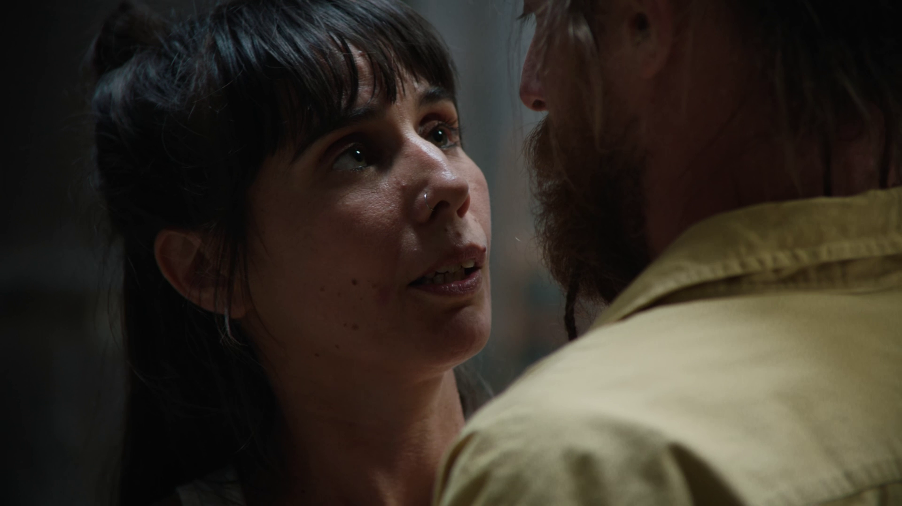

On my way to you
The dance film ©On my way to you originates from a performance created and executed by Andreia Rodrigues and Miroslav Kochánek. In this duet, a couple explores closeness through movement, seeking ways to come closer both physically and mentally. How can one (re)encounter the other? One possible answer: rope flow. Andreia and Miro reinterpret this workout trend to seek connection, resulting in a physical duet where the performers strive to keep two heavy ropes constantly in motion. The play that arises from this endeavor involves risk and physical exertion, yet the pursuit of a shared rhythm motivates them to persevere.
Based on a performance by
Miroslav Kochánek & Andreia Rodrigues
A film by
Astrid De Haes, Brecht Van Vliet, Jonathan Van Hemelrijck
Dance
Miroslav Kochánek, Andreia Rodrigues
Cinematographer
Dries Vanderaerden
Editing
Raquel Ferreira
Sound
Yannis Van den Ecker
Audio post
Mathieu Van den Driessche, Casper Hendriks
Styling
Eli Verkeyn
Art direction
Dauwke Fredrix
Make up artist
Tine Teirlynck
Catering
Pirre Kookt
Set Photography
Milo Weiler
Graphic design
Aron Wouters
Produced by
Van Bree vzw
Supported by
BREEDBEELD en de Vlaamse Overheid
The directors wish to thank
Blikfabriek, Fairuz Ghammam, Vik Hardy, Helena Jonsdottir, Jaan Stevens, TRIX Antwerpen, Michiel Venmans, Lauranne Van den Heede, Chez Freddy en Aron Wouters en Yoga Zuid
Leeds International Film Festival
"This film is nuanced, minimalist work, concentrated on the texts generated exclusively by the body. The hypnotic visual and aural rhythms of the film reflect the constant subtle shifts in intimate relationships."